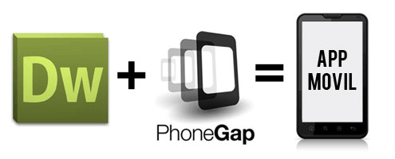
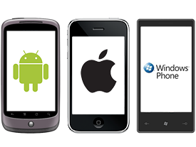

PhoneGap
Francisco Murillo - Mayo 2016
Historia
Surgido de un iPhoneDevCamp organizado por Apple en 2008 de la mano de la empresa Nitobi Software. En 2011 Nitobi fue adquirida por el gigante Adobe. Después de esta adquisición el código de PhoneGap fue donado a la Fundación Apache pasando a llamarse Apache Cordova, pudiendo ser utilizado para construir otras herramientas. La última gran evolución de PhoneGap se produjo en 2012 con el nacimiento de PhoneGap Build, que permitía acabar con la engorrosa duplicidad de entornos de trabajo.
Francisco Murillo - Mayo 2016

¿Qué es PhoneGap?
PhoneGap es un framework de código abierto (open source), creado por la empresa Nitobi que se encargaba de desarrollar aplicaciones para dispositivos móviles, que para abaratar costos y tiempos, desarrolla un framework basado en HTML5, JavaScript y CSS3, que permitía desarrollar una aplicación compatible con todos los sistemas operativos móviles. Es por esto que PhoneGap nace por necesidad, la necesidad de no tener que pensar en desarrollar para cada dispositivo, y que el producto final sea compatible con todas las plataformas.
Francisco Murillo - Mayo 2016

Caracteristicas
- Phonegap permite crear actualmente aplicaciones móviles para: iPhone, Android, Windows Phone, Blackerry, Blackberry 10, webOS, Symbian y Bada.
- Las APIs que proporciona PhoneGap son:
- Acelerómetro
- Cámara
- Compás
- Contactos
- Sistema de Ficheros
- Geolocalización
- Media
- Red
- Notificaciones (alertas, sonido, vibración)
- Almacenamiento
- Las aplicaciones creadas con PhoneGap sólo pueden nutrirse de HTML, CSS y Javascript. Si requieren lógica generada por otros lenguajes de programación, deberán conseguirla de un backend a través de APIs o webservices
- Ofrece un servicio en la nube llamado PhoneGap Build que permite construir rápidamente apps móviles y compilarlas con facilidad sin necesidad de SDKs, compiladores o hardware específico.
- Tiene una licencia Apache 2.0
Francisco Murillo - Mayo 2016